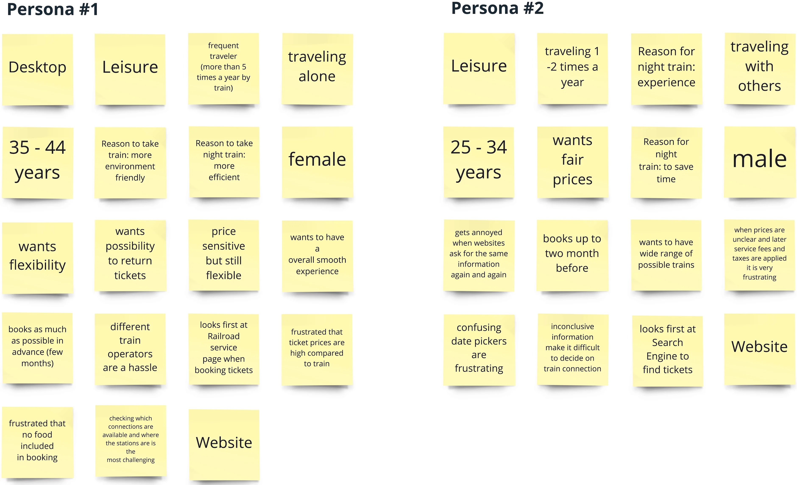
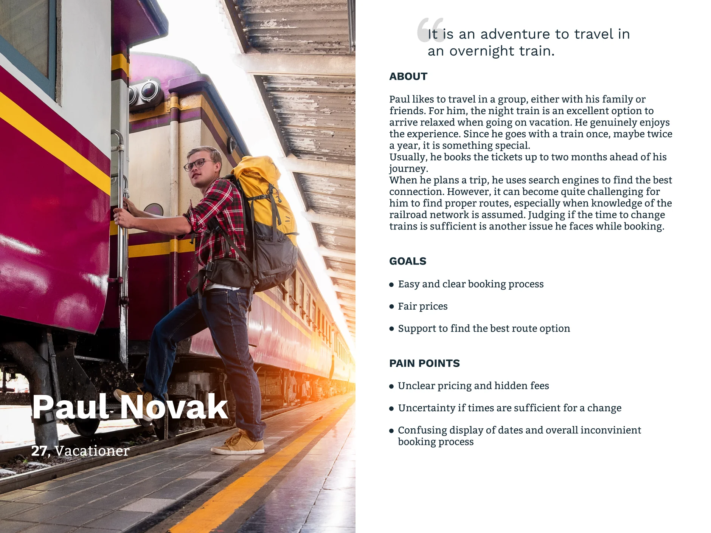
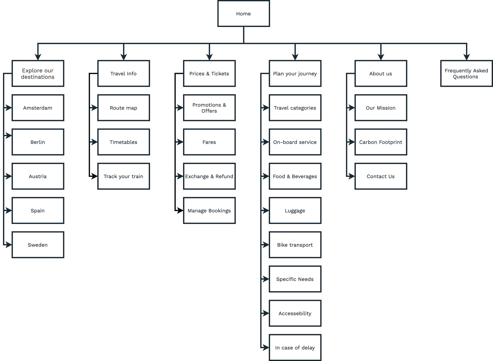
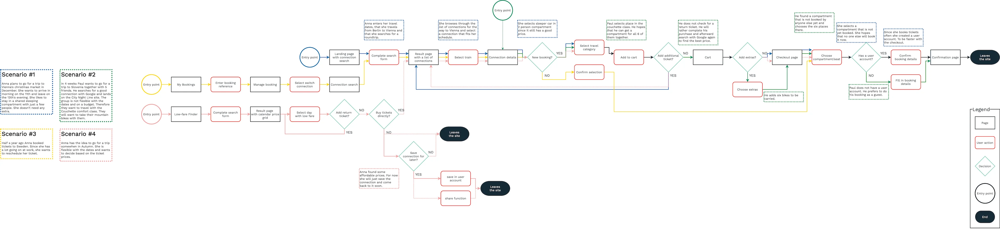
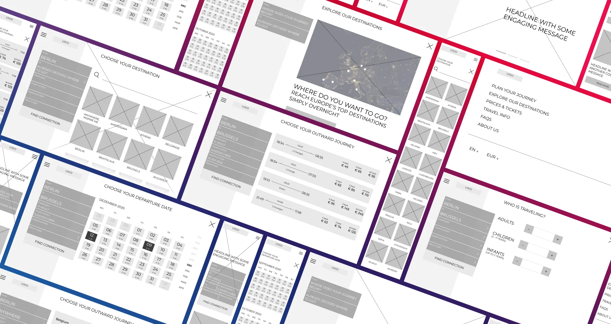
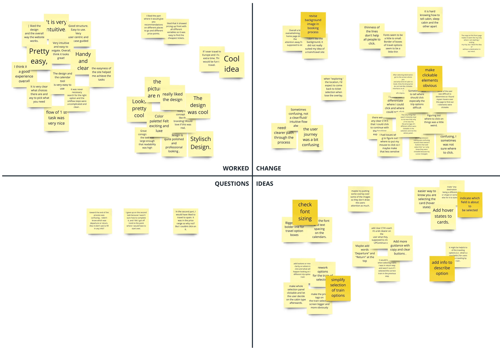

Project Background
Objectives
City Night Line was used as an exercise for how to work within an existing, iconic brand in the transactional realm of railways. The goal was to design a responsive website that covers the main functionality: search for a connection and booking of tickets.
Role
User Research, UX and UI Design
Timeline
80h
Discover
Market Trends, Competitor Analysis, User Surveys
Night trains have long served as a means of transportation to travel
long distances in reasonable amounts of time. But since the advent
of affordable air travel, the number of night trains has fallen.
Operators find themselves in the increasingly uncomfortable position
between high-speed rail services, low-cost airlines, and low-cost
bus operators.
I started the project with market research to learn about current
trends and the future of transportation. Additionally, I analyzed
possible competitors.
To gain insights about people traveling with night trains, I
conducted a survey. From 40 survey responses, 73% of respondents
stated to travel at least once a year by train. 46% (14 people) of
them answered that they traveled already by night train.
I used an affinity map to group the responses.
See the detailed affinity map
The following conclusions are drawn from the survey.
Insights
- travelers choose night trains mostly to save time
- experience and sustainability play a smaller role
- the price is a significant factor for most travelers when booking train tickets, followed by details of the journey like the duration and the number of changes
- 85% of travelers are using night trains for leisure trips
- 64% are traveling alone, followed by 28% with family and 21% with a travel group
- while 21% state they are booking tickets with via app or respectively buy their ticket at a station, 93% purchase their tickets per website mostly using a desktop computer (71%)
Needs
- passengers need an easy way to find tickets for the best price
- for frequent travelers, it is essential to have a degree of service offerings, f.e. the possibility to cancel or reschedule their tickets
Pain Points
- intransparent pricing, f.e. when it is not clear upfront that service fees are applied or when there are different prices for the same comfort category
- it is annoying when it is necessary to buy tickets from different train operators, or knowledge of the railroad network is needed to find the best connections
Define
Personas, Sitemap, User Flow
In the next step, I clustered the gathered information to find patterns. At first, the similarities between all travelers seemed to lead to only one persona. But on a closer look, the differences between frequent travelers and the occasional traveler were too distinct.
Eventually, I split them up to create two personas. Please meet Emma Anderson and Paul Novak.
For the definition of the sitemap, I conducted an open Card Sorting. The results of this exercise were quite ambiguous. The users’ agreement where to place menu items was not conclusive enough to create a sitemap. Therefore I conducted a second round of Card Sorting. Based on the first results, I provided categories to the participants, but allowed the creation of own categories if necessary. The results turned out more distinct to create a sitemap.
The most important task for the personas is to purchase tickets. Thus I modeled the user flow accordingly. See the detailed user flow
Ideate
Sketches, Wireframes, Moodboard, Logo & Wordmark, Style Tile, Responsive UI Design
Before I started creating wireframes in the digital realm, I scribbled several ideas for the screens in an Crazy Eights activity. This exercise helped me to ideate and eventually create the wireframes.
With the wireframes at hand, I created a low-fidelity prototype to evaluate the user flow. See low-fi prototype
I conducted a remote usability test with two tasks. The two scenarios model the main goals of the personas:
- booking a ticket to a specific destination with flexible dates
- researching a possible destination with a set date range and budget
While the first assignment worked as intended, the performance of
the second one was rather unsatisfying. The task had a bounce rate
of 50%, while the other 50% of users could only indirectly finish
the mission. Interestingly all users who indirectly finished the
first scenario began browsing on the "Explore our destinations"
page. They rated their satisfaction with the booking process as high
(on average 8 on a scale from 0 to 9).
I used a Feedback Grid to gather and organize the user feedback.
See the Feedback Grid in detail
The feedback helped me to iterate over the wireframes. Validating assumptions helps to make informed decisions. Testing in an early stage of a project has the benefit that changes are easier to make and it can prevent going in the wrong direction.
With the user flow in place, I focused on the branding.
First, I gathered ideas and inspirations on a mood board. For the
color palette, I took inspiration by neon lights that pass by the
windows when traveling by night. The colors intend to have a modern,
luxurious, yet feel.
Logo and wordmark are an essential part of a brand. Since City Night Line was an actual operator, I revised the old logo. The goal was to keep its essence - a flashy font type and the moon to symbolize night travel. The result is a minimalistic logo. Moreover, I created a Style Tile to dive deeper into defining the look and feel.
Eventually, this lead me to the creation of the user interface.
Deliver
UI Kit, Prototype
In the next step, I collected all interface elements in a UI Kit. This collection of UI components can serve as a reference point for later additions to the project and be useful for communication in further development. See the detailed UI Kit
Prototypes help to communicate the way a website interacts with the user. Therefore, I created a prototype to fill the screen design with life. See the prototype
Iterate
User Testing, Second UI Design Iteration
To uncover usability issues in the design, I conducted a second user test. This test aimed to validate if the iteration of the booking process improved the user experience. Additionally, the goal was to find out about users' overall satisfaction and impression. For that, I created a high-fidelity prototype based on the desktop screen designs. To get comparable results, I conducted the same tasks as in the first test run. But since the second task was not specific enough, I refined the wording to be more clear.
Afterward, I clustered all user reactions in a Feedback Grid to find patterns. It became evident that the success rate of the test scenarios increased compared to the first test setup. Especially the second scenario's success rate showed a significant increase. It showed that incorporating the 'Anywhere' option delivered added value to the user flow. Overall, users described the user flow mostly as intuitive and easy to follow. While the UI design also got mainly positive feedback, the user test showed that users struggled at some parts of the process. See the Feedback Grid in detail
Finally, I iterated over the UI based on the user feedback. I targeted the discovered issues and updated the prototype accordingly. I also revised the prototype. See the updated prototype here